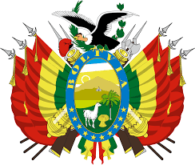
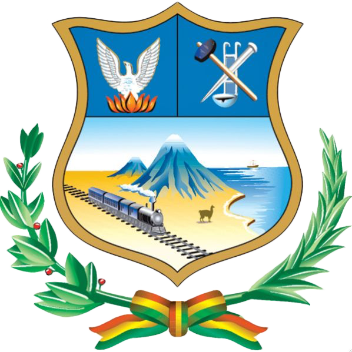
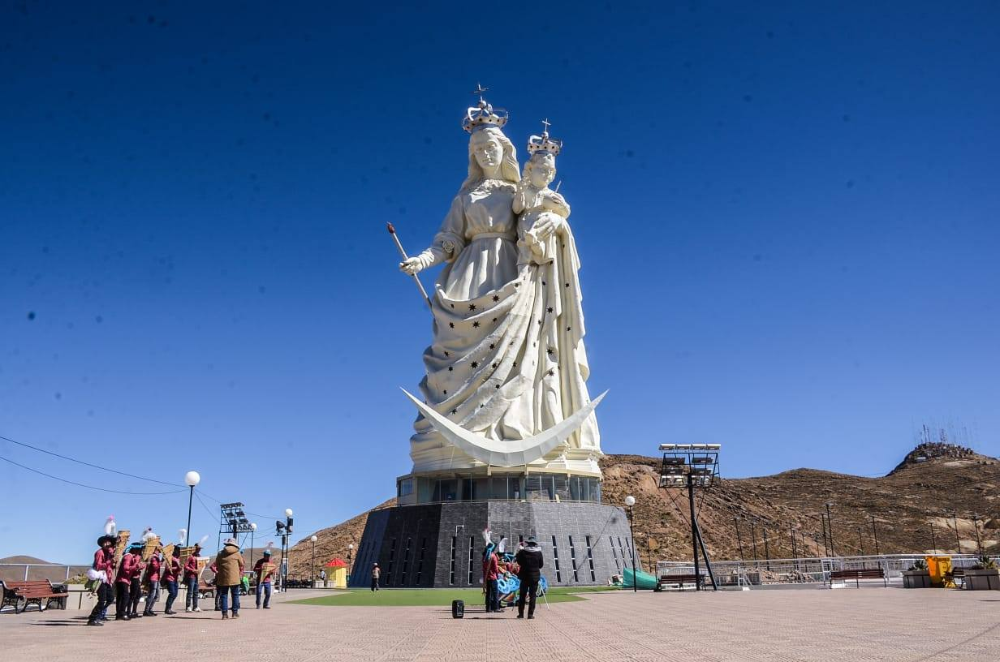

El poder de tus brazos Oruro

La historia de Oruro se remonta a tiempos prehispánicos, cuando la región estaba habitada por el pueblo uru, una de las culturas más antiguas del altiplano boliviano. Vivían cerca de los lagos Uru Uru y Poopó, dedicándose principalmente a la pesca y la caza. Posteriormente, el territorio fue incorporado al Imperio inca o Tahuantinsuyo, que aprovechó los recursos minerales de la zona. La ciudad fue fundada el 1 de noviembre de 1606 por Manuel de Castro y Padilla con el nombre de Real Villa de San Felipe de Austria, durante el periodo colonial español. Desde sus inicios, Oruro se destacó por su riqueza minera, especialmente por la explotación de la plata, lo que la convirtió en uno de los centros económicos más importantes del Alto Perú. En 1781 ocurrió la Revolución de Oruro, un levantamiento contra el dominio español que se considera uno de los antecedentes de la independencia de Bolivia. Durante el siglo XIX, tras la independencia en 1825, la ciudad continuó desarrollándose gracias a la minería. A finales del siglo XIX y principios del siglo XX, Oruro vivió un nuevo auge económico con la explotación del estaño. Se convirtió en un importante centro ferroviario que conectaba Bolivia con países vecinos, fortaleciendo el comercio y la industria. También fue escenario de importantes movimientos obreros y sindicales vinculados al sector minero. En la actualidad, Oruro es reconocida no solo por su historia minera, sino también por su riqueza cultural. Su Carnaval es una de las festividades más importantes de Bolivia y una de las más representativas de América Latina, combinando tradiciones indígenas y religiosas.
>